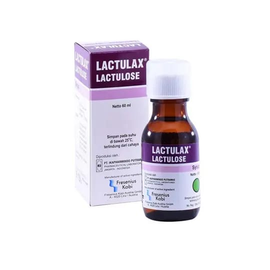
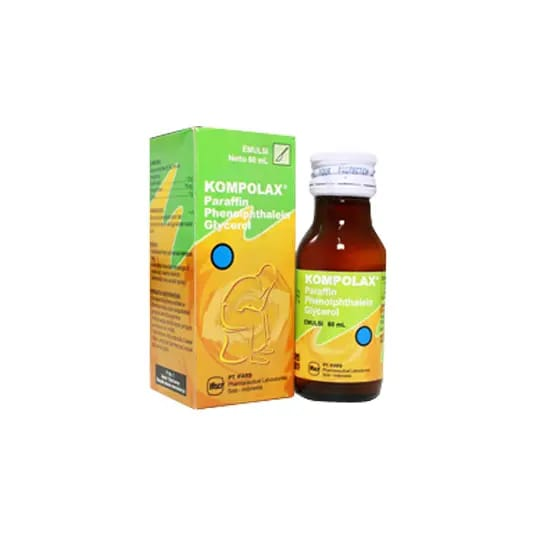
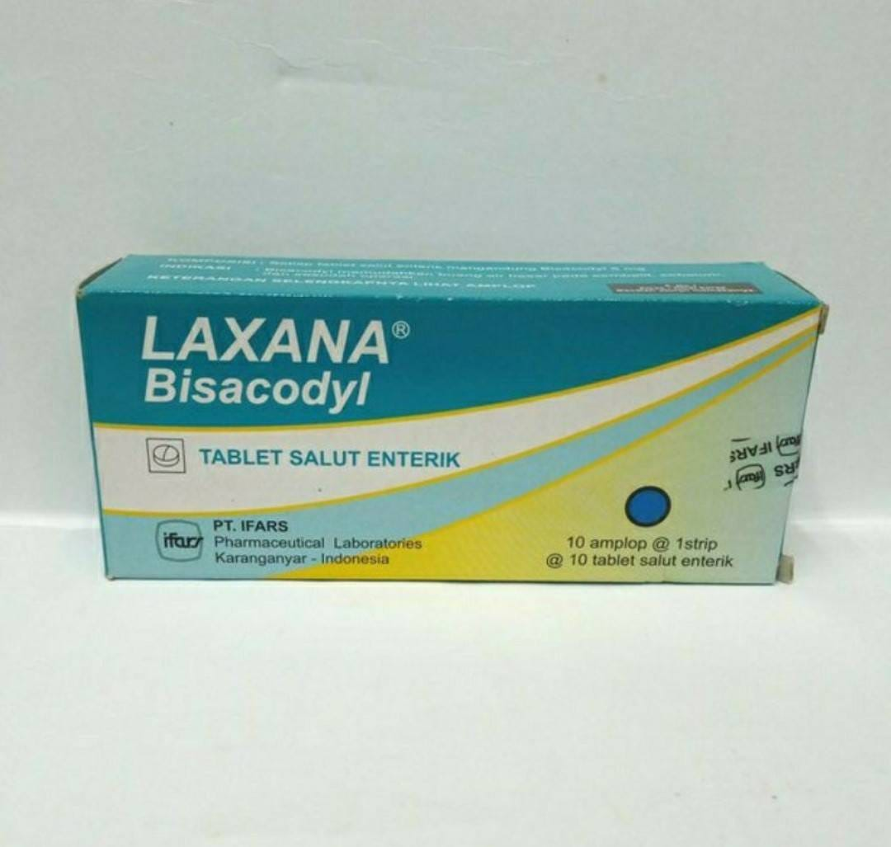
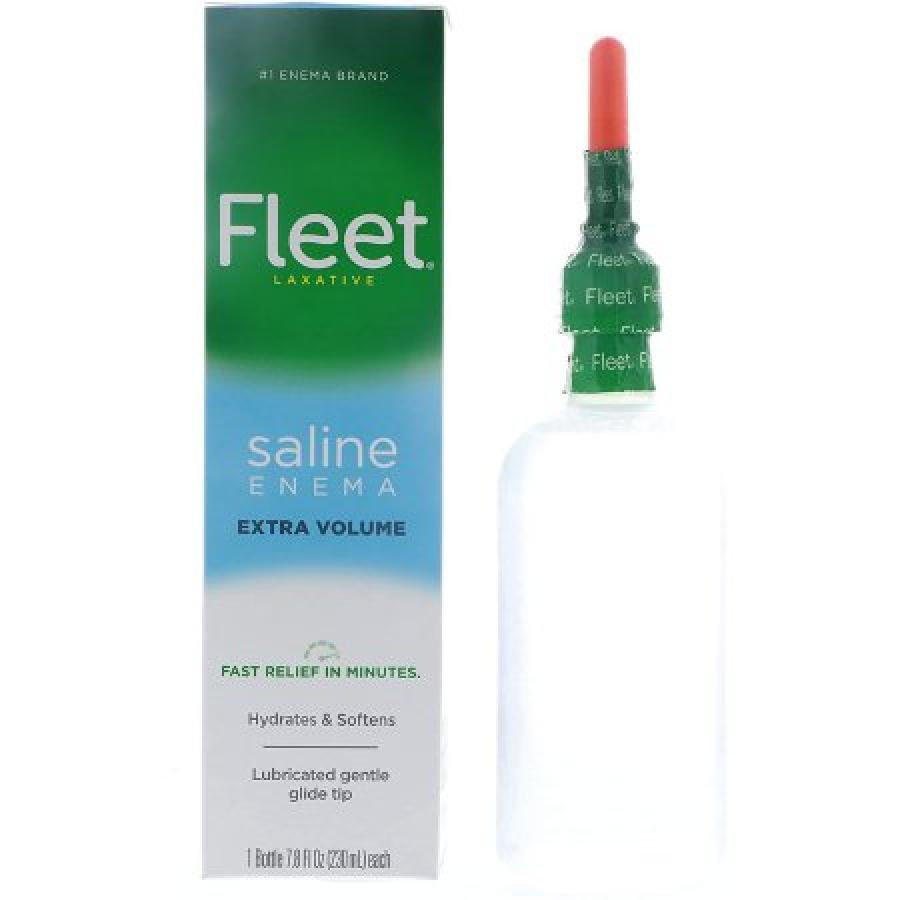

Microlax
Obat Bebas
Rp. 23.800,00
Bentuk Sediaan : Enema
Indikasi :
Mengatasi susah buang air besar/BAB (sembelit)

Lactulax
Obat Bebas
Rp. 66.500,00
Bentuk Sediaan : Sirup
Indikasi :
Konstipasi kronis. Ensefalopati portal-sistemik, termasuk keadaan pre-koma hepatik dan koma hepatik

Kompolax
Obat Bebas Terbatas
Rp 22.700,00
Bentuk Sediaan : Emulsi
Indikasi :
Untuk melembekkan feses/tinja pada konstipasi atoni, peradangan sekitar anus misalnya hemoroid, paska/setelah operasi.

Laxana
Obat Bebas Terbatas
Rp 8.100,00
Bentuk Sediaan : Tablet
Indikasi :
Memudahkan BAB pada keadaan konstipasi, sebelum dan sesudah operasi.

Fleet
Obat Bebas Terbatas
Rp. 65.000,00 – 124.100,00
Bentuk Sediaan : Enema
Indikasi :
Meredakan konstipasi